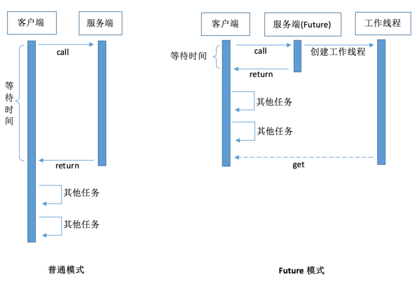

Java future
future介绍
在并发编程时，一般使用runnable，然后扔给线程池完事，这种情况下不需要线程的结果。所以run的返回值是void类型。 线程是属于异步计算模型，所以你不可能直接从别的线程中得到函数返回值。
这时候，Future就出场了。Futrue可以监视目标线程调用call的情况，当你调用Future的get()方法以获得结果时，当前线程就开始阻塞，直接call方法结束返回结果。一个任务的执行结果又该怎么获取呢?这里就需要用到Future接口中的isDone()方法来判断任务是否执行完，
如果完成完成则可获取结果，如果没有完成则需要等待，可见虽然主线程中的多个任务是异步执行，但是无法确定任务什么时候执行完成，只能通过不断去监听以获取结果，所以这里是阻塞的。
Future模式是多线程开发中非常常见的一种设计模式。它的核心思想是异步调用。当我们需要调用一个函数方法时。如果这个函数执行很慢,那么我们就要进行等待。但有时候,我们可能并不急着要结果。
因此,我们可以让被调用者立即返回,让他在后台慢慢处理这个请求。对于调用者来说,则可以先处理一些其他任务,在真正需要数据的场合再去尝试获取需要的数据。
普通方式和Future模式的差别：

Future模式可以这样来描述：我有一个任务，提交给了Future，Future替我完成这个任务。期间我自己可以去做任何想做的事情。一段时间之后，我就便可以从Future那儿取出结果。就相当于下了一张订货单，一段时间后可以拿着提订单来提货，这期间可以干别的任何事情。
其中Future 接口就是订货单，真正处理订单的是Executor类，它根据Future接口的要求来生产产品。
future demo
1 | package com.ctrip.gs.live.business.service.remoting.soa20.test; |
输出：1
2
3
4
5
6
7
8
9
10
11
12
13
14
15
16
17
18
19
20
21
22
23
24Thread#10 : in call
Thread#16 : in call
Thread#12 : in call
Thread#17 : in call
Thread#13 : in call
Thread#19 : in call
Thread#18 : in call
==========线程执行结束==========
Thread#15 : in call
Thread#14 : in call
Thread#11 : in call
Future中get结果10
Future中get结果11
Future中get结果12
Future中get结果13
Future中get结果14
Future中get结果15
Future中get结果16
Future中get结果17
Future中get结果18
Future中get结果19
==========Future方法get结束==========
Process finished with exit code 0
Guava future
ListenableFuture是可以监听的Future，它是对java原生Future的扩展增强。Future表示一个异步计算任务，当任务完成时可以得到计算结果。如果希望计算完成时马上就拿到结果展示给用户或者做另外的计算，
就必须使用另一个线程不断的查询计算状态。这样做会使得代码复杂，且效率低下。如果使用ListenableFuture，Guava会帮助检测Future是否完成了，如果完成就自动调用回调函数，这样可以减少并发程序的复杂度。
Guava future demo
1 | package com.ctrip.gs.live.business.service.remoting.soa20.test; |
结果：1
2
3
4
5
6
7
8
9
10
11
12
13
14
15
16
17
18
19
20
21
22Thread#11 : in call
Thread#12 : in call
Thread#18 : in call
Thread#17 : in call
Thread#15 : in call
Thread#16 : in call
Thread#20 : in call
==========线程执行结束==========
Thread#14 : in call
Thread#13 : in call
==========Future方法get结束==========
Thread#19 : in call
lisFuture: 11
lisFuture: 15
lisFuture: 17
lisFuture: 12
lisFuture: 18
lisFuture: 20
lisFuture: 16
lisFuture: 14
lisFuture: 13
lisFuture: 19
两者的区别
- Java future是 异步阻塞的 ，主要功能在于获取任务执行结果和对异步任务的控制，由于Future获取任务结果是阻塞的，所以将会依次调用Future.get()方法，这样的效率会很低。很可能第一个下载速度很慢，则会拖累整个下载速度；
- Guava future是 异步非阻塞的 ，目的就是多任务异步执行，通过回调的方式来获取执行结果而不需轮询任务状态。